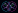

Amazing Digital Circus
/// Neural Lab
SIMULATION ONLINE
Neural Archive A
Whole-brain connectivity simulation
ACTIVE

Bubble
Fruit-fly neural mesh simulation
BUBBLE LINK
Neural pulses: ON
Auto-rotate: OFF